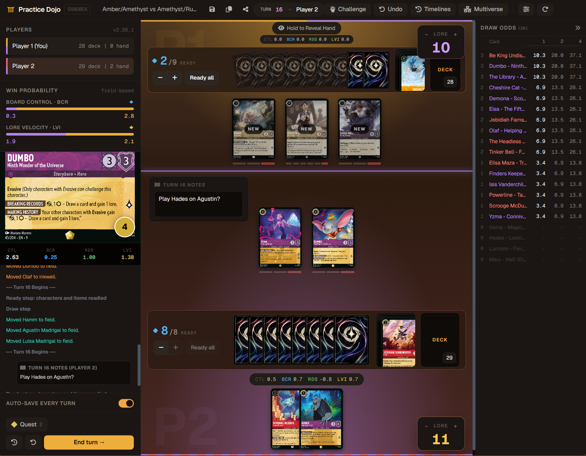
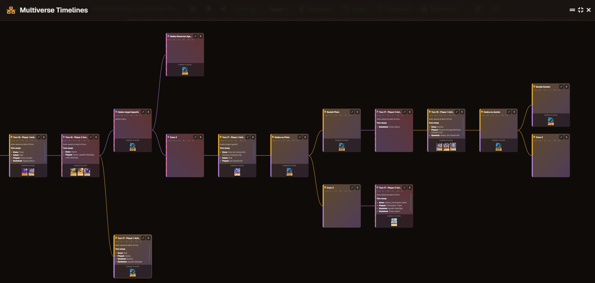

Practice Dojo
A theorycrafting sandbox for the Lorcana TCG. Replay any match between two decks turn-by-turn — then rewind to any moment, branch a new timeline, reshuffle, or hot-swap cards to see how a different line would have played out.
A companion to your favorite simulator. Import a match log straight from duels.ink and the whole game shows up as a multiverse tree, ready to explore.
Two decks loaded, turn-by-turn log, and the multiverse of possible turns one keystroke away.

Export the match log from your duels.ink game and drop it into the dojo. Every turn becomes a bookmark in the multiverse tree — with hands, ink, board, and cards-played all reconstructed for you.
Card names from the log are matched against the database — fuzzy search handles typos. Unknown cards drop in as a card-back placeholder you can swap.
A green / yellow / red badge updates as you paste, so you know the log parses before you import. No silent failures.
Once imported, every turn is a save point. Jump back to T3 and try the line you wish you'd played — the original game stays intact.
The dojo silently snapshots state at the start of every turn. Pick a match you've already played, rewind to turn 4, replay your hand differently, and the original line stays alive next to it. Both lines live in one tree you can zoom, pan, and jump through.
Every saved turn is a complete snapshot of the game. Jump back to turn 2 from turn 9 — hands, ink, board, log all restored exactly.
When you jump back, the line you abandoned auto-saves to a side branch. Compare both outcomes side-by-side.
Don't like the hand? Reshuffle from any node to see what a different opening draw does to the same matchup.
The dojo never blocks you. Play an illegal move if it surfaces a line worth checking. The point is theorycraft, not enforcement.
Zoomable, draggable, keyboard-navigable canvas of every branch you've explored. Click a node, you're there.
Toggle on and the dojo bookmarks the start of every turn for you. Name them, comment them in Markdown, color-code them.
Drag cards between hand, field, ink, and discard. Substitute a card mid-line. Add a card that isn't in your deck to test it.
Lock the board state, reshuffle the deck, redraw. Test the same position against a fresh top of deck without losing the line.
Check live what are the stats for drawing any specific card in your deck. It includes how many copies are left in the deck, how many have been played already, and what is the probability of drawing it on the next draw step or 1, 2, X turns ahead.
Paste a match log from duels.ink and the whole game lands in the multiverse — one bookmark per turn, ready to explore.
Paste a decklist, pick from the database, or start with random dummy decks. Both players ready in seconds.
Drag cards. Quest. Challenge. Ink. The dojo logs everything and tracks win-prob meters as the board shifts.


Hit M. Click any prior turn. Branch. Play a different line. Compare outcomes side-by-side.

A companion to your favorite Lorcana simulator. Open the file. Load two decks. Play. Rewind. Branch. Repeat.